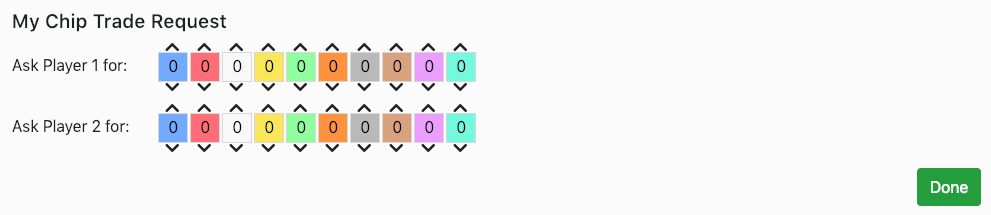
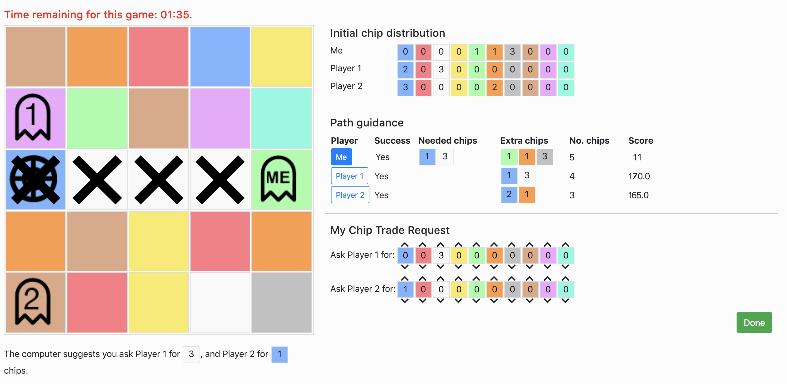

You will be requested to play the Coloured Trails game. The objective of the game is to gain the highest score possible.
Points may be gained by moving to a target location on the board and rewarded for the amount of coloured chips the player has in
his/her possesion at the end of the round. Coloured trails is a one-round game played on a
square board by two or more players. The board consists of a square grid of tiles. Each
tile is assigned a solid color from a given palette of colors (e.g., red, blue, green). Two different types of
objects may also be placed on top of tiles—these are players and the goal. Tiles may contain multiple
players and the goal.

Each player begins with a number of allocated chips of different colours. Chips are designated colors from the same palette as the board. Players can use chips to build a path towards the target tile.

Chips may only be used to move to a tile of the same color as the chip (e.g., a player uses one green chip to move to a green tile adjacent to the player’s current position). Players can only move up, down, left or right and not diagonally. Chips may only be used once.

The objective of each player is to gain the highest score possible over a set of 10 games (the score from each game will be added together for the final score). During each game you will have one chance to determine the best course of action which will award you with the highest possible amount of points. Often this is achieved by reaching the target tile, however sometimes it is better to do nothing. During the game you may request chips from other players if you need them to reach the target tile. A player must relinquish a chip that has been requested from it, if they are not already using that chip to reach a goal. If both you and another player have requested the same chip, you have precedance and will get the chip. During the game you can assume that the other players are necessarily following the best path in terms of maximizing their score.
During each game you can ask all players for as many chips as you want. An interaction with a specific player is considered a single "chip request" regardless of how many chips were requested. The game is constructed as a one-round game. You have 3 minutes per each game to decide if you want to request a chip from other players or not. Once you have decided click "Done" and the next game will begin. If you have not made a decision in 3 minutes, the game will time out and you will not receive any points for that game.
Scoring
The scores may range from -500 to +500. The following factors effect the score :
- When reaching the goal the player gets a bonus +150 points.
- Another +5 points are allocated for every chip the player has not used at the end of their play.
- The act of requesting a chip costs -70 points for each player from whom you request chips, and each single chip requested costs an additional -6 points. A chip request refers to an interaction with a specific player regardless of how many chips were requested. Therefore, when possible, you should reduce the number of players you are requesting chips from.
Computer Assistant
During the game you may use the advice provided by a computer assistant. The computer assistant will
provide
you with the best course of action to take for yourself and the best course other players may take,
according to
its own understanding. The computer assistant suggestions are not necessarily the best possible
paths
for you or for the other players. The other players are necessarily pursuing the best path in terms of
maximizing the score, therefore if there exists a better solution, the other players will not perform the
path suggested by the computer assistant.
Example

In this instance the computer assistant suggests for you to follow the path illustrated above. Following the computer assistants’ advice would mean asking Player 1 for 3 white chips and Player 2 for 1 blue chip, reaching the goal and having 5 chips remaining. Your final score would be:
- For reaching the goal : +150
- For the remaining chips : 5*5 = 25
- For the chip requests : 2*(-70) + 4*(-6) = -164
- Overall : 150 + 25 – 164 = 11
A better course of action under these circumstances would be to do nothing, and not reach the goal at all. Your final score would be:
- For not reaching the goal : 0
- For the remaining chips : 5*5 = 25
- For the chip requests : 0
- Overall : 0 + 25 + 0 = 25
You must answer the following five questions correctly in order to proceed.
1. At the end of the game I get extra points for each chip that I didn't use :
True
False
2. Requesting two chips from two different players would cost :
70 + 6 + 6 = 82 points
6 + 6 = 12 points
70 + 6 + 70 + 6 = 152 points
3. It is better to reach the target tile even if it leads to a lower score :
True
False
4. At the end of the game I get extra points for each chip that I didn't use :
True
False
5. At the end of the game I get extra points for each chip that I didn't use :
True
False
6. At the end of the game I get extra points for each chip that I didn't use :
True
False
7. At the end of the game I get extra points for each chip that I didn't use :
True
False
8. At the end of the game I get extra points for each chip that I didn't use :
True
False
9. At the end of the game I get extra points for each chip that I didn't use :
True
False
10. At the end of the game I get extra points for each chip that I didn't use :
True
False